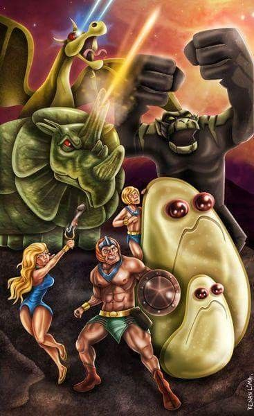

Página Inicial
Episódios
História
Personagens
Lista de Episódios

Episódios de 1967
Os Homens Papagaio
Os invasores
As estranhas criaturas
A Vingança de Sarko
Os Homens Toupeira
Os Piratas
Os Homens Aranha
Os robôs de Mekkor
O Dorgyte Perdido
Formigas destruidoras
A Derrota de Ogron
Os andróides
O templo de Trax
O Monstro do Pântano
Os Lanceiros
O Macaco Assaltante
O Minúsculo Reino de Yoki
Prisioneiros dos homens bolha
As criaturas do tempo
Os Gladiadores de Kyanite
Mekkano, a máquina mestre
A Invasão dos Eletro Homens
Missão dos amatons
A rainha skorra
Os Homens Sem Rosto
Os Zorbots
A volta de Sta-Lak
A vingança dos piratas
O chefe dos reptons
A Ilha da Gravidade
Malak e os gorilas de aço
A Volta de Torak
O antídoto
Ataque do espaço
Os Mutóides
Os Homens de cristal
Episódios de 1981
O Monstro Glacial
A Ameaça Púrpura
O Pássaro de Fogo
A Criatura Energia
Cavaleiros de Serpentes
O Bucaneiro
O Raio
Retorno dos Antigos
Caçadores Espaciais
Os Invisíveis
O Intelecto